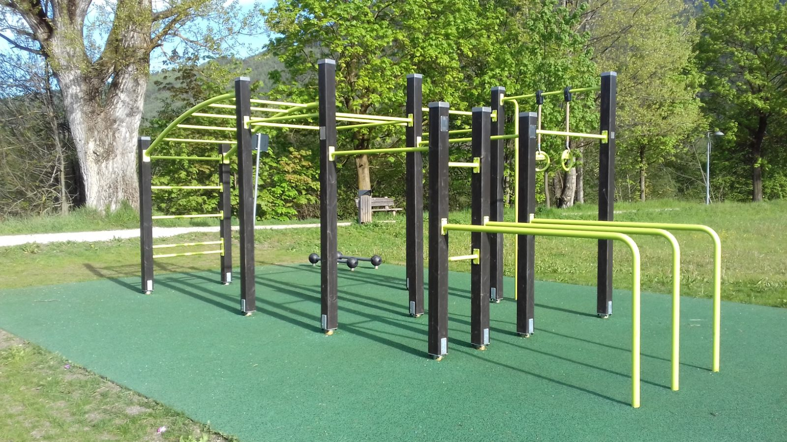
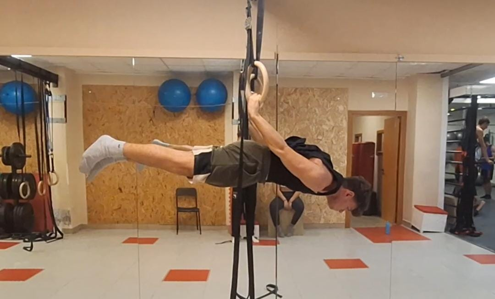
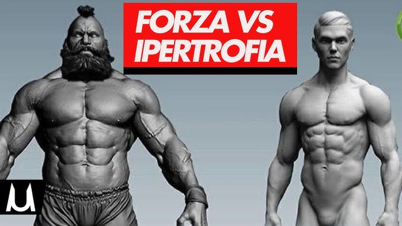

|
Che Cos'e' il calisthenics
|
Il calisthenics, e' un sistema di allenamento fisico
che si concentra sull'utilizzo del peso corporeo come resistenza.
E' una disciplina antica che promuove la forza funzionale, la flessibilita',
l'equilibrio e la coordinazione.
Il calisthenics offre un modo completo ed
efficace per migliorare la forma fisica ovunque e in qualsiasi momento.
|
|
Aneddoto e Curiosita' sull'origine del nome
|
|
"Kalos" = bello
"Sthenos" = forza
Significa quindi la "bellezza della forza"
|
|
Come allenarsi?
|
Il calisthenics e' uno sport estremamente accessibile perche' non richiede attrezzature costose ne' ambienti particolari.
Puoi allenarti ovunque: in un parco, a casa, o in una palestra, usando semplicemente il peso del tuo corpo.
Bastano solo alcune attrezzature come:
- Una sbarra
- Delle parallele
- Anelli ginnici (per livelli leggermente piu' avanzati)
Inoltre e' possibile adattare l'allenamento al proprio livello di forza e preparazione atletica molto facilmente
(se troppo difficile magari usando degli elstici o semplicemente fare esercizi propedeutici. Se troppo facili-aumentere ripetizione,
angolo della rom (della ripetizione),eseguire varianti di esercizi piu' difficili e complesse oppure utilizzando zavorre o giubbotti zavorrati)
|

|

|
Perche' scegliere il calishtenics e che benefici offre?
TABELLA DEI PRO E DEI CONTRO
|
|
PRO
|
|
CONTRO
|
- Non servono pesi o macchinari
- Puoi allenarti ovunque
- Migliora forza, equilibrio e mobilita'
- E' economico e accessibile
- Sviluppa disciplina
- Fa bene alla postura
|
- Crea "dipendenza" (diventa una passione intensa)
- Non diventi enorme
- Richiede pazienza
- Skill avanzate difficili
- Non e' per la sola estetica
|
|

|
--CONCLUSIONI--
Alla fine, tutto dipende dall'obiettivo che ognuno vuole raggiungere e dalla motivazione che lo spinge a lottare per esso.
Ogni sport ha il suo valore, i suoi benefici e il suo fascino: non esistono sport migliori in assoluto, ma percorsi diversi per persone diverse.
Il calisthenics e' una di queste strade, accessibile, stimolante e formativa.
L'importante e' praticare cio' che fa stare bene, senza discriminazioni o pregiudizi verso chi sceglie vie differenti.
Link Riferimento CXA CREW

|


|
|
Canali social CXA CREW
|
|
-2025- Calisthenics Italia© - Giuseppe Piccininno 3CI